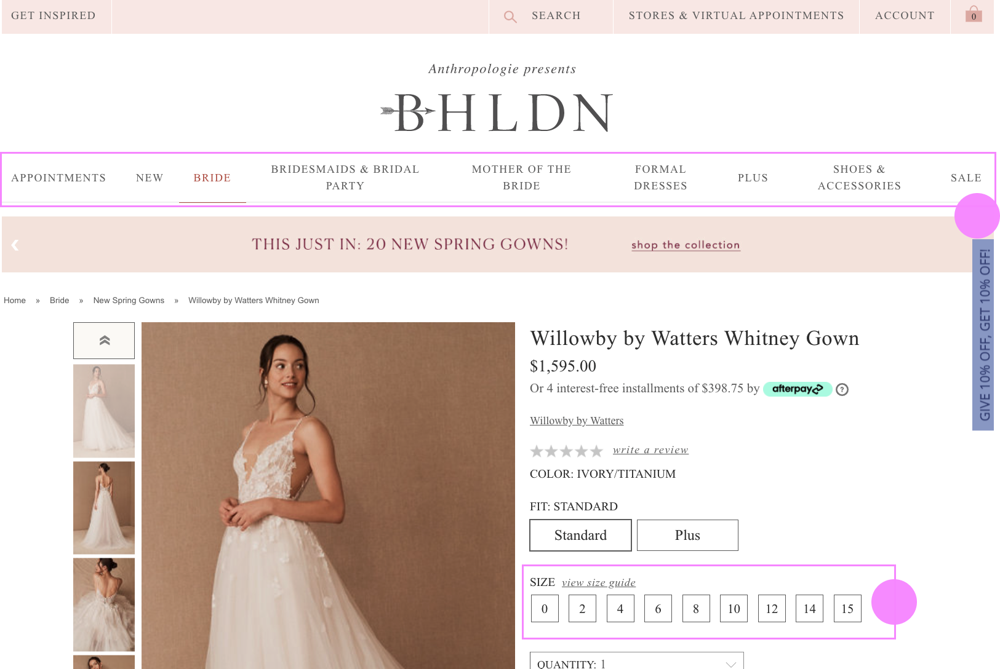
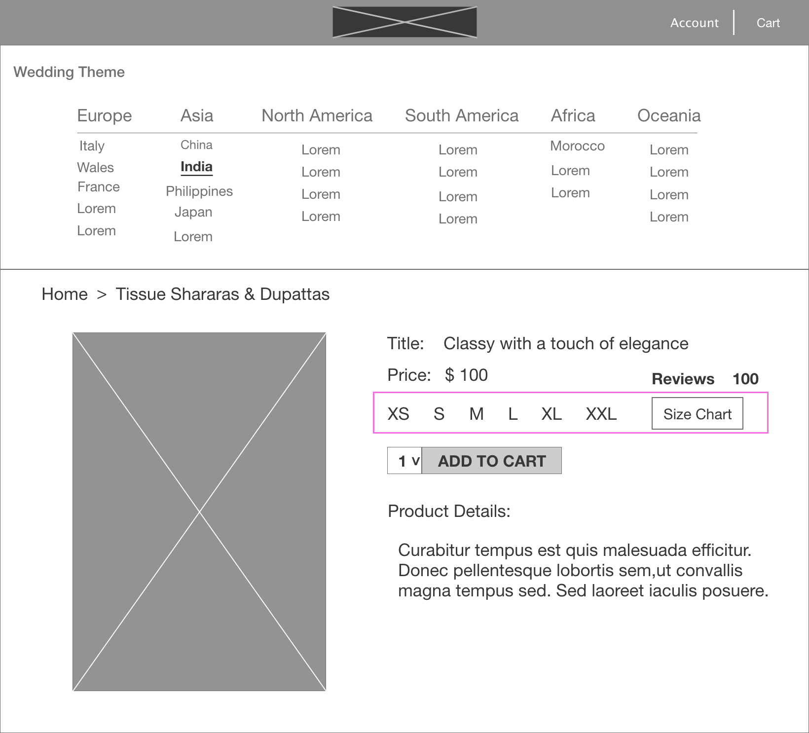

GETMARRIED An all-in-one web application makes brides wedding shopping easier.
Project Duration: Two Weeks
Project Type: Solo Project, Conceptual
My Role: UX Designer, User Researcher
Learned from My Personal Experience
Their biggest challenges during planning is "DON'T KNOW WHERE TO START”.
When I was planning my wedding ceremony I had a hard time collecting all the wedding tips and finding Chinese traditional wedding attire and decorations. I browsed on Pinterest to find wedding ideas and save them, when I found one dress I would like to purchase, it directed me to a third-party website that looked not authentic.
Brides start to prepare their wedding a year ago, counting guests, finding the right place, collecting wedding ideas could be both exciting and frustrating.
How Might We simplify brides' planning process to hold a traditional wedding ceremony?
The Challenge
Simplifying 7 Actions to 3 Actions
There are more than 10 actions brides usually take to plan a wedding, here are 7 essential ones that brides can't avoid. Which includes
Create inspiration board
Search and save wedding ideas
Look at wedding attire online
Research wedding costs
Research wedding venues
Check availability/cost of venues
Read reviews of potential wedding vendors
My Goal is to simplify these above actions to:
Search and save wedding ideas
Purchase wedding attire online
Reserve a venue online
I.Empathize
To have a deep understanding of Users' pain points, I observed how they put their efforts in planning their wedding ceremony, and I created a User Journey Map.
To assure the challenge is not my own assumption, I interviewed 3 of my friends(1 Chinese American, 1 Japanese American, 1 Indian American) who were engaged and have started planning their wedding, they faced the same challenge.
Quotes from interviewees:
"To search and collect information from different websites is time consuming"
"There are not many wedding dress stores which have indian wedding attire in my neighborhood"
"I feel exhauset to wait in the stores to measure my size, hope I can do it at home and ask the dress to deliver to me"
Key findings:
1. Users get frustrated with collecting all information from different websites.
2. Users feel tired searching for wedding dress stores and where to buy decorations.
3. Users feel exhausted to wait for wedding dress pick up.
II. Reframing the Problem
Decentralized information is all over the place on the internet, Brides need to search for information and look on dress between websites.
Repeating search exacerbates Brides' energy and time. The pandemic also increased Brides' anxiety when visiting the wedding store to measure their wedding dress.
How Might We help Brides make their wedding planning and dress purchasing effortless?
III. Ideate
One webiste that provides everything you need
There isn't a website that Users can both look for wedding ideas and buy wedding dresses online, so, I compared three of the most famous wedding related websites. All three wedding websites have useful and diverse information. I'd like to see what they offer and how they presented it. This will help me to define my user flows and avoid current user pain points. BRIDES.COM and PINTEREST.COM are more like blogging website, which shares wedding ceremony tips and ideas. BHLDN.COM is a shopping website where you can buy wedding dresses online.
BRIDES.COM
Large variety of wedding ideas and inspiration
Easy to share post via Facebook,Pinterest and Email
Opportunity:
Add online shopping feature
PINTEREST.COM
Easy to save dress and ideas to user account
Great variety of wedding dresses and ideas
Opportunity:
Buy dress through idea page

BHLDN.COM
Clear navigation allows users search by categories
Size guide allows users feel comfortable to shop online
Opportunity:
Add ceremony ideas feature
Key findings from my competitors:
Large variety of wedding ideas and inspiration
Easy to save dress and ideas to user account
A precise size guide lets users feel comfortable to shop online
Clear navigation lets users choose dresses by different categories
Created User Flow allows me to avoid giving overload choices to users
I created the User tasks of Saving wedding ideas and Purchasing a dress, reducing as much process as possible, and aligning with the goal of an All-in-one website.
Drew Information Architecture ensures the wealth of content inside my website is well organized
To underline the goal and the User Flow of GetMarried, I started to architect the sitemap of this website before designing the wireframes.
Sketched out Wireframes
By focusing on the User flow and sitemap, I sketched website wireframes, and I extracted some of the highlights
I reduced the homepage categories from 8 to 4 and I only kept those Users will frequently use. I put more options in the middle of the other detail pages. Fewer options will reduce Users' cognitive load.

Clear Size Chart allows Users to measure and choose the right size for them to make a wedding dress purchase online.
IV. Prototype
Moodboard & Color Palette
When we think about a wedding, words such as "Radiant", "Loyalty", "Glamorous", "Elegant", "Breathtaking" will come up to our minds. I collected some beautiful images with those keywords and I created the Moodboard, then the color palette.
Typography & Iconology
I picked elegant, sharp typeface "Kefa" and "Adobe Clean" for the main font. I chose "Lucida Calligraphy" for "New Arrival", "What's Hot" etc. Because "Lucida Calligraphy" feels like a handwriting font when you are writing some type of invitation, it looks familiar and will attract users eyes.
There are 88% of couples plan their wedding done online. 30% done on Mobile, 57% done on Desktop/Laptop. To suit all Users' needs, I designed the mobile response app.
I changed the website categories to Menu and moved it to the top left corner of the mobile prototype.
V. Testing
I choose the moderate user research method and interviewed 3 of my friends, give them tasks, and observed their behavior when was doing the tasks. Depending on my prompts, even sometimes they moved the mouse around, eventually, they all finished the tasks smoothly. They think the website is a great idea.
Final Thoughts(What I Can Do Better)
Positive Results, Much more needs to do
Thank you for your time watching my case study :) From this case study I learned UX Design is not just about Visual Design, most importantly is how to put users' data into your design to make users comfortable when using your app. Next time I will try to collect quantitative data first and then sort it into qualitative data. Also, I will put more effort into Accessibility such as Web Content Accessibility Guidelines (WCAG) to reach more people's needs.